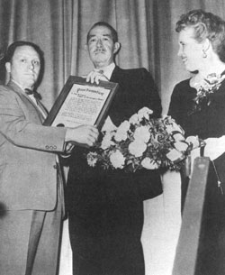
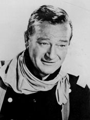
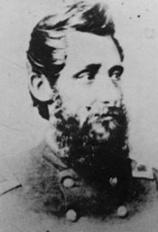

<html>
	<head>
		<title>
			Movie Gallery: The Horse Soldiers--The Story as Film
		</title>
		
		<link rel=stylesheet href="../../../style.css" type="text/css">

		<map name="navbar">
			<area shape="rect" href="../moviegallhist.html" COORDS="185,198 422,221">
			<area shape="rect" href="../moviegalllink.html" COORDS="423,198 489,221">
			<area shape="rect" href="../moviegallbook.html" COORDS="490,198 563,221">
			<area shape="rect" href="../../index2.shtml" COORDS="564,198 725,221">
		</map>
	</head>

	<body bgcolor=006699>
		<center>
			<table bgcolor=000000 cellpadding=10 width=735>
				<tr>
					<td>
						<center>
							<table bgcolor=000000 border=0 cellpadding=0 width=718>
								<tr>
									<td bgcolor=ffffff>
										<center>
											
										</center>
										
										<br>
			
										<center>
											<table cellpadding=5 bgcolor=ffffff width=700>
												<tr>
													<td>
														<center>
															<p class=bigbold2><i>The Horse Soldiers:</i> The Story as Film</p>
														</center>
															<hr>
														</td>
													</tr>
													<tr>	
														<td>   	
														<p>
														<blockquote>
															<p>It has been a struggle, but a happy one. We, as screen
															writers and producers, feel that we have reproduced with
															realism and feeling one of the little known but gallant
															moments of the war between the Blue and the Gray. We hope it
															will be a proud calling card from Hollywood for the world of
															five hundred million movie fans to see and will augment the
															renewed interest in the Civil War as we head for the
															centennial celebration.
															
															<p>We are proud to have produced it, and we hope that the
															readers of <i>Civil War History,</i> as experts, will agree
															that Hollywood has not violated the memory nor the spirit of
															the men, who, as General William T. Sherman said, performed
															"the most brilliant expedition of the Civil War."
															
															<align=right>
															<p>--John Lee Mahin and Martin Rackin, on <i>The Horse
															Soldiers</i>
															</align>
														</blockquote>
														
														<p>In 1959 Clyde C. Walton, Illinois state historian and
														founding editor of the scholarly journal <i>Civil War
														History,</i> did something no editor of that journal has
														done since. He opened his pages to Hollywood filmmakers,
														inviting John Lee Mahin and Martin Rackin to explain why
														they were producing <i>The Horse Soldiers.</i> In a brief
														introduction to readers, many of whom were academicians,
														Walton noted that the soon-to-be-released film was taken
									
														<table width=250 align=left cellspacing=10 cellpadding=10>
															<tr>
																<td bgcolor=#CCCCCC> 
																	<center> 
																		
																	</center>
																												
																	<p class=smallbold>Author Harold Sinclair
																	was given a special commendation by the town
																	of Bloomington for his work on the book
																	<i>The Horse Soldiers.</i></p>
																</td>
															</tr>
														</table>
															
														from Harold Sinclair's popular novel of the same title. "The
														following article is a departure from our traditional
														subject matter," Walton conceded, but he believed that "all
														Civil War students will be intrigued by the problems
														involved in telling the story of Grierson's Raid through the
														medium of the motion picture film."
														
														<p>Mahin and Rackin had met at Warner Brothers, where both
														worked as studio writers. Mahin was the better known of the
														two. After he left Harvard he worked as a newspaper reporter
														and then for a New York advertising agency. Eventually he
														ended up writing scripts in Hollywood. He plied his trade at
														most of the major studios, becoming one of the lead writers
														at MGM before moving on. With nearly three decades of film
														experience behind him, he had gained a reputation for being
														versatile and imaginative, able to write witty repartee for
														comedy and pithy dialogue for action films. His favorite
														script was done at Twentieth Century Fox for <i>Heaven
														Knows, Mr. Allison,</i> an engrossing tale of a U.S. Marine
														and an Irish nun thrown together for survival on a
														Japanese-held Pacific island during World War II. The film,
														starring Robert Mitchum and Deborah Kerr, did well at the
														box office and garnered Mahin his second Oscar nomination.
														The next year he and Rackin decided to strike out on their
														own. "Our venture into our first independent motion picture
														was decided upon when we read Harold Sinclair's novel <i>The
														Horse Soldiers,"</i> they told the readers of <i>Civil War
														History.</i> "To us as writers, it had all the dash and
														boldness of a commando raid;" moreover, "it had the
														necessary elements for color and large screen," and "it had
														reality, which to us is the prime requisite of a great
														motion picture." They secured the rights to the book from
														Fox, which had bought the option but not acted on it. They
														then plunged into their own research, which included reading
														Dee Brown's <i>Grierson's Raid,</i> and they began fleshing
														out a script in the spring of 1958. Mahin wrote most of the
														dialogue. He and Rackin were confident that they could use
														their "motion picture license" to heighten the sense of
														drama and recreate "the historical raid that made it
														possible for General Grant to take Vicksburg." Their claim
														that they were recreating as much as they were creating gave
														them something in common with Sinclair.
														
														<p>Mahin and Rackin wanted "to spare no expense" in making
														their film "authentic." They intended to shoot on location
														with as much realism as possible. They did not, however,
														have the money to do anything on their own. For financial
														backing they turned to the Mirisch brothers, who in turn had
														an arrangement with United Artists. The Mirisches had been
														putting together film deals for the better part of a decade.
														United Artists had been around for forty years, founded by
														D. W. Griffith, Charlie Chaplin, and a few other Hollywood
														dissidents to sidestep the studio system and stimulate
														independent filmmakers. <i>The Horse Soldiers</i> became
														part of a twenty-film package deal between the Mirisches and
														United Artists and would be one of five films released under
														that agreement in 1959. Generally speaking, the Mirisches
														saw to actual production; United Artists handled promotion
														and distribution.
														
														<p>The Mirisches kept their distance, though they offered
														suggestions. They left the details to Mahin and Rackin and
														to the one man they were confident could actually make the
														movie the way it needed to be done, legendary director and
														six-time Oscar winner John Ford. Mahin knew that Ford had a
														reputation as a "Civil War buff." They had worked together
														on <i>Mogambo</i> with Clark Gable and Ava Gardner six years
														before. When Mahin and Rackin pitched their idea to Ford,
														"he fell for it like a ton of bricks." Though Ford had never
														directed a Civil War film, the war had served as a backdrop,
														even as a subtext, for his so-called cavalry trilogy,
														beginning with <i>Fort Apache</i> in 1948 and followed in
														successive years by <i>She Wore a Yellow Ribbon</i> and
														<i>Rio Grande.</i> The Civil War also figured in the plot of
														<i>The Searchers,</i> a 1956 film which some consider Ford's
														finest. Ethan Edwards, as played by John Wayne, is the
														film's lead character, an unrepentant, embittered
														Confederate, a social outcast who was a "Rebel" in more than
														just the obvious sense.
														
														<p>Ford preferred to work from short stories rather than
														books. His cavalry trilogy, for example, had been adapted
														from pieces that James Warner Bellah wrote originally for
														the <i>Saturday Evening Post.</i> "I don't like to do books
														or plays," Ford reportedly said; "I prefer to take a short
														story and expand it, rather than take a novel and try to
														condense."' Everyone involved understood that if Ford became
														the director, <i>The Horse Soldiers</i> would become his
														film--in the creative rather than the legal sense. His
														contract with the Mirisches gave him a salary and a
														percentage of the gross in exchange for surrendering his
														rights to the film. His ownership would be more subtle, less
														formal. He left his mark on everything from the script to
														the cast selection to the choice of camera angles. "It is
														certainly a John Ford film," as Dan Ford, the director's
														grandson put it, in effect giving the film a stamp of
														authenticity.
														
														<p>Ford was as feared as he was respected, a master of
														intimidation who brooked no interference. He did not suffer
														fools gladly, nor would he let any producer's ambition or
														actor's ego stand in his way. As Harry Carey Jr., a member
														of Ford's little stock company of players, reminisced, there
														"was no chain of command with John Ford. There was him, and
														there was us." As irascible as he was ingenious, Ford
									
														<table width=200 align=right cellspacing=10 cellpadding=10>
															<tr>
																<td bgcolor=#CCCCCC> 
																	<center> 
																		
																	</center>
																												
																	<p class=smallbold>Six-time Academy Award winner
																	John Ford gives direction on the set of <i>
																	The Horse Soldiers.</i></p>
																</td>
															</tr>
														</table>
															
														inspired ambivalent feelings even among those who knew him
														best--if indeed anyone in the film industry could be said to
														have known him well. "He was my nemesis and my hero," all at
														once, wrote Carey. No doubt others felt the same. John
														Wayne, who spent much of his career in front of Ford's
														camera and who suffered the sting of Ford's quick temper and
														acerbic wit as often as anyone, still stood in awe of the
														man. Ford, he recalled, read voraciously and "absorbed
														everything." He was, Wayne concluded, a magnificent artist,
														who could have been good at anything--except public
														relations.
														
														<p>Ford disliked giving interviews and bristled at the
														pretensions of critics who thought that they could explain
														the meaning of his films to others. The deeper they
														attempted to dig, the more impenetrable he might become. If
														they tried to take him where he did not want to go, he would
														deliberately mislead them or cut them off dismissively.
														Looking for consistency in what he said about himself, his
														films, and the people he worked with is therefore an
														exercise in futility. As he put it bluntly to one who
														probed, "The truth about my life is nobody's damn business
														but my own." Disinclined to share his deeper feelings, he
														rarely waxed philosophical on filmmaking. He did, however,
														tell one interviewer a few years before he shot <i>The Horse
														Soldiers</i> that "it is wrong to liken a director to an
														author. He is more like an architect, if he is creative. An
														architect conceives his plans from given premises--the
														purpose of the building, its size, the terrain. If he is
														clever, he can do something creative within those
														limitations." Ford the architect would step in at any point
														in the production to impose his will, his vision of the
														grand design. Those who worked with him knew that, writers
														included. Frank Nugent, a New York film critic who also
														collaborated with Ford on various scripts, commented that,
														"once the script is finished, the writer had better keep out
														of his way. The finished picture is always Ford's, never the
														writer's."
														
														<p>Ford liked to work fast. Filming <i>The Horse
														Soldiers</i> took just over two months, starting at the end
														of October 1958. It was not done in sequence. On-site work
														came first, virtually all of it outside Natchitoches,
														Louisiana, with a brief side trip to Natchez, Mississippi.
														Ford had no interest in trying to retrace the raiders'
														route. Rather, he wanted to capture a general Southern
														flavor and develop what he deemed the proper mood. Oakland,
														a plantation near Natchitoches owned by the Prudhomme
														family, served as his primary outdoor set. Production people
														brought in ties and tracks from Texas to create the illusion
														of a railroad, with accompanying telegraph poles and lines,
														and they built a bridge over the Cane River where the film
														version of the fight at the Tickfaw would be staged. Hills,
														fields, forests, and a swamp needed for various scenes were
														close by. Locals who could double as Yankee raiders and
														pursuing Rebels were hired as extras. Ford and Mahin arrived
														by train over a week before the shooting started. Rackin
														flew in, as did those playing the leads. A caravan of twenty
														trucks hauled equipment all the way from Hollywood. Interior
														shots were done later at the Samuel Goldwyn studios, and the
														raid on Newton Station was staged on an MGM back lot. The
														first scene in the film after the opening--a meeting
														involving Ulysses Grant and John Marlowe--was not done until
														New Year's Eve, and apparently work on other scenes
														continued into the middle of January.
														
														<p>The producers spent some $5 million, the bulk of it to
														cover the cost of a large cast and crew, horses,
														construction, and transportation. That was considered a
														sizable amount in 1959, "a new chapter to the already
														startling saga of Hollywood production economics." Nearly a
														third of the total went to pay the salaries of John Wayne
														and William Holden. Wayne had been cast as Col. John
														Marlowe, Holden as Major Keller, renamed Curtis by Mahin,
														altered again to Hank Kendall by Ford. At $750,000 each and
														a percentage of the profits, Wayne and Holden were
														expensive, but they were the top box office draws at that
														time. They had never worked together before. Mahin and
														Rackin, backed by the Mirisches, were taking a calculated
														risk. They thought the story appealing in its own right, but
														they needed a veritable blockbuster to recoup their
														investment, and big stars were indispensable in courting the
														public, a variation on the old adage about needing to spend
														money to make money.
														
														<p>Never mind that Ford's movie was about victorious
														Yankees; the locals were star-struck. They had anticipated
														the film crew's arrival ever since Ford and his son Pat
														scouted locations. "They say this is Ford's labor of love
														and so it's bound to be big," reported the <i>Shreveport
														Times</i> in a special section titled "The Movie Makers at
														Natchitoches." Saying, good-naturedly, that "a sudden
														appearance of Sherman himself" could not have caused more of
														a stir, the people of the area were "proud to be host to a
														big movie." Alexandria joined Shreveport and Natchitoches in
														putting out the welcome mat. So did Natchez when the film
														company moved there.
														
														<p>The moviemakers boasted that they used very little of
														Sinclair's book for the script. Their claim is true only in
														the narrowest sense. Perhaps they seldom borrowed Sinclair's
														words, but the story they chose to tell is easily
														recognizable as his. After all, they could not venture too
														far without straying away from the historical truths that
														they professed to be telling. The outlines of Grierson's
														raid are visible underneath all of the changes made by
														Hollywood, just as they had been with Sinclair. United
														Artists promoted the film as fictionalized history, "a
														robust story of a daring raid that turned the tide for the
														Union in the Civil War." The filmmakers kept Marlowe's
														personality essentially as Sinclair had written it--tough
														but fair, making difficult decisions as best he could. They
														also left Marlowe a widower suspicious of doctors. Instead
														of being a successful grain merchant, however, he is
														converted into a railroad worker, a self-made man who rose
														from section hand to engineer through hard work and native
														genius, not formal schooling. Thus they could make the hero
														even more heroic--a true American everyman--and they could
														underscore the tragic side of the conflict, as the builder
														who in peacetime constructs railroads is sent on a wartime
														mission to destroy them. Furthermore, they added new
														situations and new characters, including a romantic interest
														for Marlowe and, in what has turned out to be the most
														memorable scene, an attack on Marlowe's encamped raiders by
														boys from a military school.
														
														<p>Not surprisingly, they increased the intensity of the
														action, with two major battles rather than the skirmishing
														leading to one decisive confrontation of the smaller budget
														Fort Apache and Rio Grande. The first pitched battle is at
														Newton Station midway through the film, where railborne
														Confederates summoned by telegraph are mown down as they
														charge up the main street of town. The second comes at the
														very end. Sinclair's little fight at the Tickfaw, which had
														been fairly close to the real event, is escalated into a
														do-or-die engagement. Ford used the creek-sized Cane River
														as a smallish Amite rather than the Tickfaw and had some of
														the raiders thunder across the bridge while others
														outflanked the Rebels, seized their artillery, and drove
														them from the field. The route to Baton Rouge now open, the
														Yankees ride on, blowing up the bridge in their rear to slow
														the enemy's pursuit.
														
														<p><i>The Horse Soldiers</i> opens rousingly. Music arranged
														by the accomplished Hollywood composer David Buttolph
														provides background to cinematographer William Clothier's
														sweeping camera vistas. Troopers silhouetted against the sky
														ride in single file along a rail line, moving past telegraph
														poles on an earth embankment. Ford had employed variations
														on this image before--gallant soldiers headed for war--but
														perhaps never to greater effect than now. Stan Jones wrote
														the title song, "I Left My Love." Buttolph gave it a
														contrapuntally jaunty and martial feel, pulsating brass and
														cadenced strings mixed with strummed banjos, members of a
														male chorus singing that they would "ride clean down to hell
														and back for Ulysses Simpson Grant," some of the troopers on
														the screen seemingly swaying in time to the music. Jones's
														tune would be repeated when the raiders departed La Grange
														with the same devil-take-the-hindmost gusto. It is reprised
														later by a dying trooper more ironically, as the mission
														becomes increasingly dangerous, the men exhausted, the
														outcome uncertain.
														
														<p>Jones's involvement was typical of Ford's approach to
														moviemaking. Once a ranger in Death Valley, Jones had met
														Ford when the director was on location there for another
														film in the late 1940s. Jones wrote songs and sang some of
														them for Ford. Intrigued, Ford filed the ranger in his vast
														mental library. When Ford went to Moab, Utah, to film
														<i>Wagonmaster</i> and <i>Rio Grande,</i> he remembered
														Jones, whose "Ghost Riders in the Sky" had recently become a
														hit. He invited Jones to compose tunes for both films and
														even put him in front of the camera in <i>Rio Grande</i> to
														sing along with members of the Sons of the Pioneers who
														serenaded Maureen O'Hara, playing opposite John Wayne. Ford
														turned to Jones again for <i>The Searchers.</i> Jones wrote
														a title song and had a hand in other pieces as well, his
														original music being combined with actual period ballads to
														have the hoped-for emotional impact.
														
														<p>In fact, there was often musical overlap in Ford films. A
														background orchestration heard in the opening of <i>The
														Searchers</i> includes, hauntingly, a few bars each from
														"Lorena" and "The Bonnie Blue Flag," tunes from the era
														depicted in the film. Passages from "Lorena" would be heard
														again and again in <i>The Horse Soldiers,</i> and a full
														version was recorded as the flip side to the single of
														Jones's "I Left My Love," released by United Artists, which
														also did a soundtrack album. (Incidentally, Harold Sinclair
														had written "Lorena" into his <i>Horse Soldiers</i> too.)
														"The Bonnie Blue Flag," a celebration of the Confederacy,
														though only hinted at in <i>The Searchers,</i> is used
														repeatedly in <i>The Horse Soldiers.</i> Ford intended to
														squeeze in "The Girl I Left Behind Me," a signature piece in
														<i>Fort Apache</i> and as much a staple in cavalry films as
														it had been for the real cavalry. It was recorded on the
														soundtrack even though the scene it must have been intended
														for is not in the film. The album, like the movie, was
														marketed as being educational as well as entertaining. The
														music on it, asserted promotional copy written for the back
														cover, carried "the stamp of absolute authenticity," making
														the album, like the film itself, a part of "living history."
														
														<p>Ever ready to cast his favorites, Ford slipped Stan Jones
														into <i>The Horse Soldiers,</i> the musician once again
														converted into an actor. He appears as Ulysses S. Grant in
														the all-important first scene. For this opening Ford shifted
														from Memphis, where Sinclair began his book, to a riverboat
														anchored on the Mississippi and within sight of Vicksburg.
														It is a rainy night; big guns boom in the distance. Instead
														of Hurlbut passing orders to Marlowe, Hurlbut and Marlowe
														are waiting on Grant. Sherman is present, Sooy Smith is not;
														he is not in the film at all. As Mahin wrote it and Ford
														shot it, Marlowe had never met Grant or Sherman before.
														Grant is seated, dimly lit behind a desk, with a map of
														Mississippi off to his side on the wall. The idea for the
														mission was his. The responsibility for working out the
														details would be Marlowe's.
														
														<blockquote>
															<p>GRANT: Colonel, for your benefit, the war on our side
															hasn't been goin' well at all.
															<br>SHERMAN: Not in Washington, not in the newspapers, not
															in the field.
															<br>GRANT: To put it mildly, with less men and less
															resources, the South has whipped us to a standstill. Now if
															I could take Vicksburg [he lights his cigar from a lamp as
															he speaks], the whole picture would change. But I have to do
															it this summer [thumping the desk with his fist for
															emphasis].
															<br>SHERMAN: Or sit out here another year, which might cost
															us a hundred thousand men, might cost us the war.
															<br>GRANT: Which brings all this talk down to their main
															source of supply, and a thorn in our side, Newton Station.
														</blockquote>
														
														<p>The strategic imperative of taking Vicksburg established,
														the importance of Newton Station to Grant's plans
														identified, the details are hammered out quickly. Marlowe is
														to take a "short brigade" consisting of his own 1st
														Illinois, Secord's 1st Michigan--changed from the 2nd
								
														<table width=175 align=left cellspacing=10 cellpadding=10>
															<tr>
																<td bgcolor=#CCCCCC> 
																	<center> 
																		
																		<br><br>
																		
																	</center>
																												
																	<p class=smallbold>John Wayne as Colonel John
																	Marlowe (above), and Benjamin Grierson, upon whom
																	the character of Marlowe is based.</p>
																</td>
															</tr>
														</table>
														
														Illinois in Sinclair's book--and Blaney's 2nd Iowa. He is to
														avoid fighting if possible until he reaches Newton Station.
														Once there he is to demolish rails, ties, rolling stock,
														locomotives, and whatever contraband he can lay his hands
														on. Marlowe wants to destroy "at least enough to keep 'em
														busy for a couple of months rebuilding, otherwise the raid
														would just be another horse ride." As the four men savor
														cigars and whiskey, the danger of what lies ahead for
														Marlowe and his raiders is emphasized.
														
														<blockquote>
															<p>HURLBUT [to Grant]: Sam, even if he should manage to get
															through to Newton Station he'd be three hundred miles dead
															center in the Confederacy.
															<br>GRANT [to Marlowe]: Have you thought how you'd get back?
															<br>MARLOWE [wryly]: Have you, sir?
															<br>GRANT: Well, I guess I asked for that. But then I hate
															to think of you sittin' it out in Andersonville prison. It's
															a hellhole.
															<br>MARLOWE: I'd think about that twice too, sir.
															<br>GRANT: Well Colonel, your success [the four share a
															toast].
														</blockquote>
														
														<p>This scene takes fewer than three minutes. It is
														indicative of the filmmaker's need to simplify where
														possible for the viewer, keeping the dialogue spartan and
														using historical figures--Grant and Sherman--whose names
														should have been recognizable to most filmgoers. Later in
														the picture Nathan Bedford Forrest replaces Wirt Adams and
														the other Confederate pursuers for the same reason, the
														famous man a composite for the more obscure. A Mathew Brady
														group picture scene of Marlowe and his officers at La Grange
														serves a similar purpose. Brady was nowhere near
														southwestern Tennessee in April 1863, but then his is the
														one name the audience could be expected to link with Civil
														War photography. The reference to AndersonvIlle, which
														recurs through the film, is a testament, perhaps, to the
														popularity of MacKinlay Kantor's critically acclaimed book
														published just a few years before. That the riverboat
														meeting never took place and that Andersonville prison did
														not yet exist were secondary, even incidental issues to
														Mahin and Ford. Grant had ordered the mission, his concerns
														were essentially as shown, the real Grierson confronted the
														same difficulties now facing the fictional Marlowe, and,
														even if Andersonville did not exist, other prison camps did
														and the plight of prisoners there was all too real.
														Interestingly enough, Sinclair had alluded to Andersonville
														in his original manuscript, an anachronism not caught until
														MacKinlay Kantor spotted it. Sinclair and his publisher were
														lucky; it was deleted from the galley proof, with readers
														none the wiser.
														
														<p>Mahin and Ford kept place names to a minimum. La Grange
														is the starting point, Newton Station the target, Baton
														Rouge the destination. Other towns along the route go
														unnamed, as do rivers, except for a brief allusion to the
														Amite. Capt. Asa Bryce did not make it into the script, and
														Colonel Blaney is a mere cipher. Both were casualties of the
														need to streamline and condense, keeping the viewer's
														attention focused on Marlowe's column and the interplay of
														Wayne as Marlowe with the other lead characters. Blaney is
														at Marlowe's staff meeting in La Grange--the scene that
														follows the riverboat conference--but only as filler. He and
														his men return north very early, not, as in Sinclair's
														fictional rendition or in Brown's historical account of
														Hatch, to raid the Mobile and Ohio Railroad before swinging
														toward La Grange. Instead, they are sent straight back to
														camp because the column chanced upon Rebel pickets in a
														sharp exchange costing Marlowe a couple of troopers. Marlowe
														hopes the enemy will be fooled into believing that all the
														Yankees have retreated, but in the film Blaney's mission is
														no more complicated than that. The audience watches over
														Marlowe's shoulder as Blaney's men file back the way they
														came, to the strains of "When Johnny Comes Marching Home."
														The raiders have been discovered within minutes of entering
														Confederate territory, and Marlowe just reduced their
														strength by a third. If the audience is now wondering how
														the mission could possibly succeed, then Hollywood's
														alteration of the facts served its plot-thickening purpose.
														
														<p>Major Gray is kept in the story, though his role is less
														important. He is made more dashing, an actor-turned-soldier
														given to quoting Shakespeare. An earnest but naive romantic,
														he is anxious "to see some action," as Private Schwartz had
														been in Sinclair's book. He is gravely wounded rather than
														killed outright, as he had been in Sinclair's novel.
														Unhorsed, propping himself up with one hand and stanching
														the flow of blood from a wound with the other, he urges his
														bugler "to blow, trumpet, blow!"
														
														<p>Secord--now Phil instead of Frank--is rewritten as a
														politico whose driving ambition endangers the entire
														mission. Sinclair had left Secord in the background as a
														solid, reliable officer. In Sinclair's version it was Secord
														who wisely urged Marlowe to ride west and cross the Tickfaw
														rather than continue south to Osyka. In the Mahin-Ford
														revision, Secord is incapable of such counsel because he is
														blinded by delusive dreams of glory, dreams that expand with
														the column's success. First he aims at Congress, then he
														ponders becoming governor of Michigan, not stopping until he
														envisions himself in the White House. Contrastingly, when
														things do not go well he is too quickly crippled by doubt
														and fear. He pleads repeatedly with Marlowe to swing north
														and return to La Grange after Newton Station, contending
														that to try to ride for Baton Rouge was sheer "suicide." And
														when the raiders are apparently caught in a pincer on front
														and rear he declares there is no disgrace in "honorable
														surrender." All along he is out of his element, wanting to
														attack when it is imprudent and too willing to give up when
														the going gets tough. Essentially he serves as a
														counterpoint to Wayne's Marlowe, his bombastic foolishness
														accentuating Marlowe's understated wisdom.
														
														<p>The ill-fated Ed Stumm, Tom Murphy, and Bernhard
														Schwartz, all of whom were important to Sinclair's tale, do
														not make it onto the screen. Like Sinclair, Ford deploys
														Butternut Guerillas who are identifiable by dress though not
														by group name. They are referred to simply as scouts or
														vedettes. Sinclair had made over Richard Surby into Andy
														Bullen. Bullen is not in the film. Rather, Ford combines his
														casting preferences with the story line borrowed from
														Sinclair. Ford's primary scouts are named Wilkie, Dunker,
														and Deacon Clump, and their personalities are tailored to
														the actors who played them, two of whom were drawn from
														Ford's unofficial film family. Ken Curtis, who had sung with
														the Sons of the Pioneers and married Ford's daughter, played
														Wilkie with the nasal twang he had affected for <i>Rio
														Grande</i> and <i>The Searchers.</i> Hank Worden, the film's
														Deacon Clump, had also appeared in <i>The Searchers</i> and
														more or less reprised his oddball role. His moment of glory
														in <i>The Horse Soldiers</i> comes near the end. Onetime
														preacher and activist on the Underground Railroad, he knows
														southwestern Mississippi well. He guides the column safely
														through a swamp and around a regiment of Confederates
														waiting to intercept them. All of the scouts had donned
														civilian garb soon after entering Mississippi. Before then
														it was Dunker and Wilkie who figured out where they were
								
														<table width=200 align=right cellspacing=10 cellpadding=10>
															<tr>
																<td bgcolor=#CCCCCC> 
																	<center> 
																		
																	</center>
																												
																	<p class=smallbold>John Wayne, in a scene from
																	<i>The Horse Soldiers.</i></p>
																</td>
															</tr>
														</table>
														
														going. In camp Marlowe had started a rumor that the brigade
														was riding to Nashville for a parade. Dunker and Wilkie,
														with the sun on their left in the morning light, knew that
														could not be true. "Hey, we've been riding smack dab into
														Reb territory," a disbelieving Wilkie exclaims.
														
														<p>Not all of Ford's regulars were on hand--no Ward Bond or
														Victor McLaglen, no Ben Johnson or Harry Carey, Jr. Ford
														personally recruited Hoot Gibson, former Western star and
														friend from his early Hollywood days, to come out of
														retirement and play a small role. Judson Pratt, who
														portrayed Sergeant Major Kirby, Marlowe's "topkick," filled
														the part once reserved for McLaglen. Pratt was nowhere near
														McLaglen's size, and the blustering, brawling character
														McLaglen perfected in <i>She Wore a Yellow Ribbon</i> is
														left out. Nevertheless, the standard jokes about drinking
														written for McLaglen are retained for Pratt. Furthermore,
														Kirby, by replacing Sergeant Major Mitchell, Marlowe's
														trusted aide, gave the new ranking sergeant a dual role: as
														comic relief and as an added dimension to the friction
														between Colonel Marlowe and Dr. Kendall. Bing Russell, the
														actor playing Dunker, was not part of Ford's inner circle
														either, but his role was crucial. His death precipitated the
														clash between Marlowe and Kendall that was the most marked,
														though predictably altered, carryover from the novel.
														
														<p>The film relationship between the soldier and the
														physician follows the same general pattern as Sinclair's
														original: initial verbal clash in LaGrange, arrest connected
														to a baby's delivery, differences put aside at the end. The
														details, however, vary considerably. The mutual antipathy is
														sharpened on the screen to exploit what the eye could see
														and the ear could hear, whereas Sinclair had to limit
														himself to what the mind could suggest. Too, the filmmakers
														aimed at a larger, more diverse audience, not just readers
														of historical fiction who could be expected to know a fair
														amount about the period. Moreover, the book had one lead
														character with a supporting cast; the film had two, with
														Holden's Kendall needing to be on screen almost as much as
														Wayne's Marlowe.
														
														<p>In Sinclair's story there had never been a question that
														the doctors would accompany the column. They were, after
														all, regimental surgeons. The immediate source of friction
														between Marlowe and Keller was over how to carry Keller's
														medical supplies on horseback and how many casualties the
														doctors could reasonably be expected to treat if there were
														heavy fighting. In the film those nuances are eliminated.
														Marlowe is upset because he had to take Kendall at all,
														especially since he would not be able to take fieldpieces or
														supply wagons. Kendall is not part of his command; the
														doctor is imposed on him by orders from Grant's
														headquarters. That that will be a problem is made evident
														when Marlowe and Kendall meet alone after the final staff
														meeting at La Grange.
														
														<blockquote>
															<p>KENDALL: Colonel, I gather you're not too happy about my
															going along.
															<br>MARLOWE: I hadn't counted on you, that's all.
															<br>KENDALL: I can understand your reasons for trying to
															avoid a fight, tactically speaking, but, you're going very
															deep into enemy territory. Tell me, what did you intend to
															do about your wounded?
															<br>MARLOWE: I intend to move and move fast. Those too badly
															shot up to carry on will be left to the clemency of the
															enemy, civilian or military.
															<br>KENDALL: Including yourself? [put sarcastically, as much
															statement as question]
															<br>MARLOWE: Naturally. [looking at Kendall irritatedly]
															<br>KENDALL: That's a pretty primitive attitude, medically
															speaking.
															<br>MARLOWE: Well, Doctor, war isn't exactly a civilized
															business. 'Course I realize that it gives you fellas a wider
															field of opportunity...
															<br>KENDALL: For experimenting, Colonel?
															<br>MARLOWE: I didn't say that. [his anger rising]
														</blockquote>
														
														<p>Marlowe instructs Kendall to take the troop rosters,
														examine the men, and, using his "unchallenged opinion," to
														relieve from duty any who were unfit or who might get sick
														on the long ride. By his tone Marlowe makes it obvious that
														he does not want Kendall around and that he thinks little of
														his supposed expertise. Kendall tries to set him straight.
														"Look, Colonel, I didn't ask to be assigned to this
														mission," he points out. "I'm a military doctor. I've been
														ordered to go and I'm going to do my job. So get off my
														back." Kendall strides away; Marlowe silently watches him
														go. Within moments viewers get to see how this will play
														out. Kendall starts relieving men of duty, including
														Marlowe's aide, who suffers from malaria. Marlowe is
														furious. The absentminded officiousness of Kendall's medical
														orderly--Otis Hopkins or "Hoppy," as portrayed by O. Z.
														Whitehead--aggravates him further.
														
														<p>The tensions roiling beneath the surface explode soon
														enough, as the column enters Confederate territory. Two
														troopers are shot by concealed Rebel pickets. Kendall
														examines one, asking Marlowe, sardonically, if he is to be
														treated or left "to the clemency of the enemy." Marlowe
														calls a halt and prepares to send Blaney's 2nd Iowa back to
														La Grange. The filmmakers rewrote the scene that Sinclair
														set at Newton Station in the middle of his story and
														inserted it here, very early on. Marlowe sees that one man
														is being buried while the other is resting against a tree.
														He asks for	 Kendall; Floppy tells him that the doctor
														went into a ramshackle hut just off the road. Marlowe weaves
														his way past the blacks in homespun clustered around the
														door and enters. In two more changes from the book Kendall
														has completed the delivery successfully, and mother and
														child--black, not white--are fine.
														
														<blockquote>
															<p>MARLOWE: We've got a couple of wounded men out there, you
															know.
															<br>KENDALL: No, one's dead. One's gone; one's born. It's an
															amazing process, isn't it? As many as I've delivered, it
															never falls to awe me. [Kendall goes outside to wash his
															hands; Marlowe follows.]
															<br>MARLOWE: All right, Kendall. Get back and take care of
															your wounded.
															<br>KENDALL: He'll be all right. Hopkins knows what to do.
															<br>MARLOWE: You're not a country sawbones, you know. You're
															an officer in the Union army, under oath.
															<br>KENDALL: I took an older oath before that one.
															<br>MARLOWE: They didn't seem to be having any trouble
															having babies around here, before you arrived.
															<br>KENDALL: I was sent for and I was asked to help and I
															couldn't turn 'em down. Now come off it, Colonel, even you
															were born.
															<br>MARLOWE: As of right now, you are under officer's
															arrest. Insubordination.
															<br>KENDALL: Do I still carry out my duties, sir? [said in
															unbowed disbelief ]
															<br>MARLOWE: From now on you will confine them to the
															troops.
															<br>KENDALL: Very well, sir.
															<br>MARLOWE: Don't push me too far, Kendall. [Wayne growls,
															walking off in his distinctive gait.]
														</blockquote>
														
														<p>Marlowe and Kendall find small ways to bother each other
														for the next hour or so, building toward a confrontation the
														audience knows must occur. It finally comes when Dunker, the
														scout, dies. He had injured himself at Newton Station during
														the destruction of Rebel property when a rusty ax blade
														ricocheted and sliced open one of his legs. Kendall notices
														him limping and covers the gash with a poultice to prevent
														blood poisoning. Marlowe happens upon the scene. "What are
														you putting on there, dirt?" he asks disgustedly. Kendall
														responds, "No, tree moss; ordinary green mold. It has some
														sort of healing agent, I imagine." Marlowe, unimpressed,
														throws Kendall's words back at him. "You imagine," he mocks.
														"I don't imagine the results," Kendall retorts. "This is an
														old Cheyenne Indian cure." Marlowe walks off muttering
														disdainfully, "Cheyenne Indian cure ... green mold ... tree
														moss."
														
														<p>Though Kendall told Dunker to leave the poultice on,
														Dunker removed it later because his leg started to itch, the
														very sign of healing Kendall wanted. Kendall has to operate
														that night. Too late; Dunker dies the next morning. It is
														while Kendall is preparing to amputate Dunker's leg that
														Dunker, drunk from pain-dulling whiskey, slurs a few lines
														of "I Left My Love." Marlowe observes as Kendall explains to
														Dunker that only amputation could save him. Dunker asks what
														would become of a one-legged cavalryman. Kendall can only
														respond that he would be left with "the closest civilian
														care." Terrified at his prospects, Dunker rages,
														"Andersonville! Is that what happens to me Doc,
														Andersonville?" Downcast, Kendall admits, "quite possibly."
														If the column rode on, leaving Dunker behind, an embarrassed
														Kendall understood that he would then become part of the
														very thing he scorned in Marlowe at their meeting in La
														Grange. But in that embarrassment there was also a deeper
														understanding. He had his duty; so did Marlowe, proving that
														it could be lonely at the top for both men.
														
														<p>Marlowe demands an accounting the next morning. "You lost
														us a good man," Marlowe opens accusingly. Kendall cannot
														really give him an answer because he could not pinpoint the
														cause of death--perhaps it was blood poisoning, perhaps it
														was Dunker's heart. "If... if... maybe... perhaps." "What'sa
														matter, Medicine Man?" Marlowe barks as he looms over a
														weary Kendall. Kendall snaps, throwing the cup of whiskey he
														was nursing in Marlowe's face and challenging him to a
														fistfight. Marlowe accepts and they ride off to a secluded
														spot. Their bout is not the donnybrook Ford had staged
														between Wayne and Victor McLaglen in <i>The Quiet Man,</i>
														but it is enough to prove that each is the other's equal.
														The eruption of cannon fire stops them mid-fight and they
														return to duty, with the audience left wondering if anything
														will change between them.
														
														<p>It does, but the change is not evident until the battle
														at the bridge. Adding to Sinclair's plot and compounding
														ironies, Marlowe is wounded in the leg as his men prepare to
														force open the road to Baton Rouge. He is now dependent on
														Kendall's surgical skill. The doctor operates on his
														reluctant, resentful, wide-awake patient. Marlowe grimaces,
														asking Kendall through clenched teeth if he is "having fun."
														Ignoring him, Kendall calmly, expertly removes the lead ball
														and responds, "You may not believe it, Colonel, but I bought
														you some time." Bandaged and rebooted, Marlowe is helped
														into his saddle, leads a charge across the bridge, and
														returns to Kendall and the final exchange that echoes
														Sinclair's original dialogue.
														
														<blockquote>
															<p>MARLOWE: Can those men be moved?
															<br>KENDALL: They're all critical.
															<br>MARLOWE: May I speak to them?
															<br>KENDALL: I'd rather you didn't. They've gotta be quiet.
															I've given them the last laudanum I have.
															<br>MARLOWE: A lousy finish for good men. Well, there's
															bound to be a medic with that Reb column. Get your horse.
															<br>KENDALL: I can't count on that.
															<br>MARLOWE: You mean you're staying? [stunned]
															<br>KENDALL: Medicine is where you find it.
															<br>MARLOWE: Even in Andersonville?
															<br>KENDALL: Even in Andersonville.
															<br>MARLOWE: I wouldn't blame you, if you slap it away.
															Shake hands? [he offers his]
														</blockquote>
														
														<p>Kendall is agreeable; they shake hands. This time the
														sarcastic banter they exchange afterward as they part is a
														sign of mutual respect, not the antipathy they had felt
														before. Viewers of Ford's film, like readers of Sinclair's
														book, are being assured that in other circumstances they
														would have been friends and that what had separated them was
														their basic similarity, not their differences--yet another
														irony.
														
														<p>The cannonade that interrupted the fisticuffs between
														Marlowe and Kendall heralded what has become the
														best-remembered scene in the film: an attack on the raiders
														by cadets from Jefferson Military Academy. This scene came
														from Ford, not Mahin. Ford was proud of it; Mahin thought it
														"one of the best scenes of the piece," ultimately one of the
														few outstanding moments in the picture. That Ford thought to
														include it is proof that the claims about his having been a
														Civil War buff are valid. Though pure invention, it was
														inspired by an actual event: the successful attack of
														Virginia Military Institute cadets at the Battle of New
														Market in May 1864. Inserted late in the fighting, they
														advanced on a Yankee position and took it. To this day the
														cadets are revered in VMI annals, and those who were slain
														are listed on an honor roll. They were not, as some would
														have it, sent out as cannon fodder to be slaughtered or mere
														children who were "massacred." No such event took place,
														though Ford believed it had. But Ford, at least, knew that
														it had not happened at New Market. Most of the boys were
														sixteen or older, and their casualty rates were in line with
														those of the regular Confederate army units they fought
														alongside.
														
														<p>Ford owned a fair number of Civil War histories, among
														which his favorites were by Douglas Southall Freeman. He
														could easily have read about New Market In Freeman or run
														down a more detailed account from one of Freeman's
														citations. It seems unlikely that he got the idea from James
														Warner Bellah. True, Bellah had worked with Ford to put the
														cavalry trilogy on the screen and he authored a book about
														Stonewall Jackson's 1862 campaign in the Shenandoah Valley
														that included the activities of VMI cadets. But Bellah wrote
														about the cadets of that year, not those who fought the
														campaign two years later, and he and Ford were not
														especially close.
														
														<p>Ford had the idea in mind back when the script was first
														being pieced together, long before the production company
														set up on location. His son Pat found Jefferson Military
														College outside Natchez, which fit nicely into what he
														intended. Not only did the college, rechristened the
														"academy" in the film, predate the Civil War; Jefferson
														Davis had been a student there for a short time. Ford needed
														well over one hundred boys so some were brought in from the
														Chamberlain-Hunt Academy in Port Gibson. Costumers were
														apparently given an authentic uniform from the period to
														copy, in contrast to some of the uniforms worn and weapons
														carried by the men in Marlowe's column--but then, costuming
														anachronisms were not a major concern if the audience would
														not know the difference." Jack Pennick, one of Ford's old
														hands and a former marine, drilled the boys. (Pennick too
														would have his screen time, as the malaria-infested aide
														forced to stay behind by Kendall.) The cadets became
														enthusiastic extras who marched in unison, fired by volley,
														and shrieked Rebel yells as they broke ranks to chase the
														raiders.
														
														<p>In the film they were sent into the field at the request
														of a regular army artillery officer. He had but a handful of
														men in his two-gun battery and wanted desperately to slow
														the raiders, who had passed through Newton Station and were
														riding hard to stay ahead of Bedford Forrest. To the ancient
														superintendent's protest that none of his boys was over
														sixteen the officer countered that he had a boy of fourteen
														and an old man of seventy-two with him. "This is war, sir,"
														he pled. "Just a little show of force" until their own
														cavalry could arrive was all he asked. The superintendent,
														also a preacher, acquiesces and orders the entire contingent
														to assemble, minus two boys suffering from mumps--a Fordian
														touch. Then, head bowed, he clasps his Bible in silent
														prayer.
														
														<p>As the cadets go forth, filmgoers are supposed to feel a
														combination of exhilaration and dread: exhilaration at the
														boys in their splendid uniforms, gleaming bayonets fixed,
														marching to a fife and drum rendition of "Bonnie Blue Flag"
														behind their superintendent, armed only with his scriptures,
														but also dread at what might await them. Ford could not
														resist adding one more touch to the scene: a drummer boy
														determined to be part of the fighting. "Reverend, my boy
														Johnny, he's all I got," his mother begs as the column
														passes her house. His father, his brothers, his uncles--all
														had perished in the war. "Cadet Buford, you are hereby
														relieved of duty," says the superintendent as he marches
														stiffly on at the head of his little column. But Cadet
														Buford does not want to go home, and his mother, played by
														Anna Lee, another member of Ford's old stock company, has to
														drag him kicking and screaming into the house. Not to be
														denied, he lowers himself out a window and runs to join the
														column. With his mother's voice in pursuit, pleading for him
														to come home, Johnny runs off to war. The camaraderie of the
														corps, the call of duty, and the allure of glory were
														stronger than any mother's wishes.
														
														<p>The artillery barrage leading up to the early morning
														assault catches the raiders unaware. Marlowe sees the boys
														coming and orders his men not to fire, even after the cadets
														loose a couple of volleys at them. Sergeant Kirby says,
														"Well, at least that Holy Joe ain't no kid" and draws a bead
														on the superintendent. Marlowe strikes the barrel of his
														carbine so that he misses. When Kendall asks what he intends
														to do, Marlowe says, "I'm gonna get the hell out of here."
														The troopers mount and beat a hasty retreat, the boys in
														pursuit, Marlowe saluting them with a wave of his hat, a
														lively version of "Dixie" playing in the background. Wilkie
														had captured the errant drummer boy and asks Marlowe what he
														should do with his prisoner. "Spank him," Marlowe orders,
														and Wilkie does, to the protests of the boy, who screams
														helplessly at the "dirty Yankee."
														
														<p>Those who have tried to pinpoint Ford's filmmaking
														intentions naturally scrutinize the cadet scenes closely
														because they were most clearly his invention, not Mahin or
														Rackin's, and not Sinclair's. Some say that this scene and
														the valiant though doomed Rebel charge at Newton Station
														prove that Ford identified with the lost Southern cause.
														Possibly, though not likely. The one-armed colonel who leads
														the charge at Newton Station and, wounded yet again,
														survives only because his old prewar friend Hank Kendall
														saves him surgically, is a heroic figure, as Ford intended.
														But there were heroes and cowards on both sides, North and
														South. Ford himself was of course no help in sorting through
														such matters. Besides, it is all but impossible to do
														justice to a good Ford picture by quoting bits of dialogue
														or describing a few scenes. His best films did not make the
														big issues of life seem simpler than they really are, and
														this is one of those films.
														
														<p>I suspect that his concerns were less about the Civil War
														than they were with larger, more universal notions of duty
														and honor. Ford was a World War II veteran and very proud of
														his service. He had formed a naval reserve outfit, the Field
														Photographic Unit, before the war and lobbied successfully
														to have it mobilized after Pearl Harbor. Captain Ford, USNR,
														now had his own wartime command. Dozens of filmmaking
														associates served in it. Ford's crew shot footage that was
														turned into support-the-war documentaries, valued service in
														itself, but they did more. Ford got them involved in
														cloak-and-dagger operations run by "Wild Bill" Donovan of
														the OSS. Ford was at the Battle of Midway in the Pacific,
														where he was wounded and for which he received a purple
														heart; he was in Africa for the Allied landings there; he
														was in the English Channel for the D-Day invasion in June
														1944. After the war he bought land in the San Fernando
														Valley and built the Field Photo Farm. For over a decade
														Ford and the other veterans of his unit gathered there to
														reaffirm their patriotism and remember those who gave their
														lives in service to their country. According to Ford's
														grandson Dan, a Vietnam veteran, commemorative events at the
														farm were held reverentially; the farm was "a true community
														and one of the most unique institutions ever created in
														Hollywood." Perhaps the end of the farm reunions, as members
														of the old war family moved on or died, had as much to do
														with Ford's supposed growing disillusionment over time as
														anything else. One of the high points of his life came just
														months before he died in 1973, when Richard Nixon appeared
														at a tribute to Ford offered by the American Film Institute
														to present him with the Presidential Medal of Freedom.
														Still, he was probably even more thrilled to have been
														promoted to rear admiral earlier during Nixon's
														administration, so powerful, so lasting were his impressions
														of the military and war, so primal his notions of duty and
														honor.
														
														<p>Ford's <i>Horse Soldiers</i> deepened an emphasis on
														honor and duty already present in Sinclair's <i>Horse
														Soldiers,</i> an important element, lest we forget, in the
														real history of Grierson's raid. That increased stress is
														obvious in the relationship between Marlowe and Kendall, in
														the gallantry of the one-armed Colonel Miles, even in the
														doggedness of Marlowe's troopers--good Americans all. More
														important, it permeates the love story inserted in the film
														that had not been a part of Sinclair's book or the actual
														raid. Indeed, the military mission is ultimately subsumed
														within personal odyssey, and by film's end the love story
														has all but taken over--not because themes revolving around
														duty and honor are put aside but because the relationship
														between Col. John Marlowe, Yankee raider, and Hannah Hunter,
														proud Southern belle, comes to embody them.
														
														<p>All of this unfolds in what is an otherwise fairly
														conventional boy-meets-girl format, in which intense mutual
														dislike eventually turns to romance, with all the expected
														verbal sparring, comedic turns, and dramatic vignettes along
														the way. Hannah Hunter, proprietress of Greenbriar
														plantation, was played by Constance Towers in her first
														starring role. The appearance of Yankee cavalrymen on her
														northern Mississippi doorstep proves most disconcerting.
														Even so, she oozes Southern charm and offers a feigned
														welcome, hoping that she can learn their intentions and send
														out a warning. She invites Marlowe and his officers to
														dinner, overplays the ingenue, and gets under Marlowe's
														skin.
														
														<blockquote>
															<p>HANNAH: Major Kendall a doctor, and Colonel Secord almost
															a congressman, and you [Major Gray] an actor. And now all
															military men. Such a waste of talent. But of course, Colonel
															Marlowe, I imagine that you are a professional soldier.
															<br>MARLOWE: No. Prior to this insanity I was a railroad
															engineer. [irritably]
															<br>HANNAH: Why, how thrillin'! Why to think of being able
															to steer one of those huge things, just a-puffin' and
															a-steamin' and a-ringin' that little bell, ding dong! ding
															dong! [she says gaily, pretending she is pulling a bell
															cord]
															<br>MARLOWE: Not quite. [agitatedly] My job was in the
															construction of railroads.
															<br>HANNAH: Well, my, such brilliant minds! Well you know,
															poor little-ole-me just barely squeezed through Miss
															Longstreet's seminary for young ladies. How did you [to
															Marlowe again] ever manage to remember all those books in
															college?
															<br>MARLOWE [at his wit's end]: I didn't. I started driving
															rail spikes at ten cents a day and found. And now, Miss
															Hunter, I must ask you to leave us.
														</blockquote>
														
														<p>Hannah maneuvers her unwelcome guests into another room
														before leaving. Using a gimmick that Martin Rackin thought
														up, she opens the doors on an unlit pot belly stove. The
														piping of that stove is connected to the stove in her
														upstairs bedroom. With the complicity of her household
														slave, Lukey, played by tennis star Althea Gibson, she
														listens in with the intention of reporting what she hears to
														Confederate forces. She hears that the Yankees are headed
														for Newton Station and then to Baton Rouge. Kendall, ordered
														by Marlowe to keep Miss Hunter company and not in the least
														fooled by her disingenuous warmth, discovers what is afoot
														and hauls the conspirators before the colonel. Marlowe asks
														Hannah if she would give her "word of honor" not to disclose
														what she overheard. "I don't hold honor with any Yankees,"
														she proclaims defiantly. Kendall cannot resist needling the
														colonel. "I noticed she was getting on your nerves all
														evening," he comments dryly. "Now's your chance to shoot
														her." Angry at herself for being caught, frustrated that she
														may not be able to spread the alarm, she lashes out
														verbally, only to discover that her time with the Yankees
														has just started.
														
														<blockquote>
															<p>HANNAH: Go ahead, shoot us, shoot both of us! But you'll
															never get away with the rest of your filthy, murderin'
															plans, Mister Colonel Marlowe. You Yankees and your holy
															principle about savin' the Union! You're plunderin' pirates,
															that's what! You think there's no Confederate army where
															you're goin'? Do you think our boys are asleep down here?
															Why, they'll catch up with you and cut you to pieces, you
															nameless, fatherless scum! [now sobbing] I wish I could be
															there to see it!
															<br>MARLOWE: If it happens, Miss Hunter, you will be.
															[stalking past her]
														</blockquote>
														
														<p>Ford uses the historical drama of the raiders' long ride
														as the backdrop for what happens between Marlowe and Hannah.
														They learn to separate their personal feelings from their
														rival causes through Ford's patented combination of humor
														and pathos. Hannah grudgingly accepts her fate as prisoner,
														but only after failing to escape by horseback and then,
														slightly later, failing to signal a passing Rebel column.
														Marlowe, she slowly begins to see, is an honorable man doing
														his duty as he sees it. Hannah, Marlowe realizes, is a woman
														of substance, as dedicated to her cause as he is to his own.
														Respect leading to affection slowly displaces hostility.
														Kendall's ironic tendencies and skill at cutting to the
														quick are often turned to aid that transformation, as
														Kendall becomes an inadvertent matchmaker. When, on the ride
														away from Greenbriar, Hannah complains about her dead
														father's clothes being taken by the raiders, Kendall
														explains that they would be worn by "scouts"; "spies," she
														counters, warning, "You'll find out what happens to spies
														down here." With deft sarcasm he responds, "My personal
														experience with spies is limited; I've only known one." She
														pulls away in a huff, but the point is made.
														
														<p>In another notable instance, just before the column
														reaches Newton Station, Marlowe pleasantly surprises Hannah.
														They encounter two Rebel deserters who have taken a county
														sheriff captive, an older man who had sought to arrest them.
														Initially, to her disgust, it appears that Marlowe is going
														to treat them as fellows in arms. Her opinion changes when
														she sees that he had no intention of letting them go or of
														harming the sheriff. After he found out what he wanted to
														know about Newton Station, he had the sheriff untied, gave
														him a gun, and had the two deserters bound, all "with the
														compliments of Hannah Hunter of Greenbriar." Confused,
														Hannah looks at Kendall, who shrugs and says, "Yes Ma'am, a
														hard man to understand."
														
														<p>Hannah gets her first real glimpse of Marlowe's
														vulnerability at the same time that viewers learn that the
														hard-bitten colonel's disdain for doctors was quite
														personal. It occurs at Newton Station, where Marlowe has had
														to fight a bloody engagement he hoped to avoid. Kendall
														and--significantly--a local doctor team to try to save the
														lives of men on both sides in a hotel whose first floor has
														been converted into a field hospital. Marlowe is shown in
														another room comforting a dying trooper whose last wish is
														that the colonel write to his mother. Later Marlowe stands
														at the hotel bar, pouring himself a drink, when he is joined
														by Hannah, exhausted from her efforts to assist Kendall with
														the wounded. The groans of one carry through to them from
														somewhere off-screen.
														
														<blockquote>
															<p>MARLOWE [caustically]: Go ahead, Kendall, have a field
															day!
															<br>HANNAH [appalled]: What do you mean, "field day? " He's
															in there fightin' to save men's lives.
															<br>MARLOWE: Men's lives or the reputation of his
															profession? [he downs a glass of whiskey]
															<br>HANNAH: Why, you can't be serious, Colonel Marlowe?
															<br>MARLOWE: Well, have it your way, ma'am. [pouring himself
															another glass]
															<br>HANNAH: Medicine is the most noble and unselfish....
															<br>MARLOWE [cutting her off]: Sure; noble profession, noble
															oath, lanterns held on high. So high they won't admit
															they're gropin' for... [he trails off, finishing another
															glassful]
															<br>HANNAH: Why, you're, you're unfair, and....
															<br>MARLOWE [again cutting her off, while pouring himself
															more]: Unfair? There was a girl, not much older than that
															boy in there. I wasn't unfair then, understand, because they
															used a lot of fancy words that an ordinary section hand
															wouldn't understand. So I held her down while two of 'em
															worked on her. I trusted doctors then. Believed in 'em.
															Because I was in love and I didn't wanna see her die [downs
															the glassful; pours another]. A tumor, they said it was, and
															it had to come out right away. So they stuck a leather strap
															in her mouth so she could bite off her screams while they
															cut away to get in there. And what did they find? Nothing!
															Oh, they were sorry! Sure, they'd made a mistake. They had
															something to talk about before their next little experiment.
															But what about me? They left me begging her not to die. I
															lost my wife. [downs a final glassful] And I didn't kill
															either one of them. I must have been crazy or too
															conventional. Quite a speech... guess I'm feeling my liquor.
															[and ends by sliding the nearly empty whiskey bottle down
															the bar, smashing a stack of double-shot glasses]
														</blockquote>
														
														<p>For John Wayne in a John Ford film that actually was a
														lengthy speech, a veritable soliloquy. Hannah and the
														audience now know that Marlowe still wrestles with his
														demons. But he has not become embittered or cynical because
														of it. He would rather build than destroy; he would rather
														save lives than take them. He did not want the "insanity" of
														war, but duty called and he answered. When Lukey is shot and
														killed by Rebel snipers a few minutes later--her death
														perhaps the most senseless, most ironic of all--Marlowe sits
														at Hannah's side, apologizing for all the pain he has caused
														her. When, awkwardly, he begins to apologize again, this
														time at the bank of the last river to be crossed, she throws
														herself into his arms when gunfire erupts. He reluctantly
														leaves her behind with Kendall after the fight at the
														bridge, but not before telling her that he loves her. "Tell
														her the rest when you get back," interjects Kendall,
														recalling Marlowe to his duty. She looks at him with
														tear-filled eyes. He then takes the kerchief from her head,
														ties it around his neck as a bandanna, lights the powder
														charge set to destroy the bridge, and gallops across as it
														is blown to splinters behind him. Kendall and Hannah watch
														him ride off to catch the column. The film ends as they
														enter a cabin to tend the wounded, with Bedford Forrest's
														men passing in the background and "Lorena" played one last
														time for effect.
														
														<p>The Mirisches and United Artists wanted a national
														release on the Fourth of July, for obvious reasons. They had
														to be content with merely getting close in most cases, but
														<i>The Horse Soldiers</i> did open in hundreds of theaters
														across the country before the end of the month. Theatrical
														trailers sent out with other Mirisch /United Artists films
														touted the picture as a great visual ride and included
														action-packed clips. "No adventure in all the annals of war
														more daring," stated the voice-over, "no story the screen
														has told is more thrilling than this true story of a brigade
														of brave fighting men who rode through hell and into
														military history."
														
														<p>On June 17, before the national release, the Strand
														Theater in Shreveport served as the site for a "gala
														premiere." Wayne, Holden, and Constance Towers flew in for
														the festivities, which included a parade, parties, and
														speeches. A special opening the next day at the Baker Grand
														in Natchez followed. Newspapers in both towns used the same
														promotional ads run nationally, celebrating the "ride to
														glory" with Wayne and Holden shown leading "the raiders on
														horseback who rode like thunder and struck like lightning."
														That they "rode like thunder" through Southern territory did
														not seem to upset the locals, who were as excited about the
														premieres as they had been about the filming. And far away
														to the north, in Bloomington, Illinois, Harold Sinclair had
														his brief moment of hometown fame, the mayor proclaiming
														July 16 a day in his honor. The <i>Pantagraph</i> joined the
														enthusiasm revolving around the debut there, noting that the
														film had been taken from "the world-famous historical novel
														by Bloomington's own Harold Sinclair."
														
														<p>Once the hoopla died down, <i>The Horse Soldiers</i>
														settled into only modest success. Given Hollywood's
														incredible output and the pressure of theater bookings, most
														films did not run very long in any one location. <i>The
														Horse Soldiers</i> enjoyed respectable one- or two-week
														engagements, but in the end the Mirisches and United Artists
														just about broke even on it. The byzantine nature of
														Hollywood accounting makes it hard to say precisely. They
														did much better with some of their other less expensive
														joint projects that year, notably <i>Some Like It Hot, </i>
														made for considerably less and earning considerably more.
														<i>The Horse Soldiers</i> received no Academy Award
														nominations. In 1959 <i>Ben-Hur</i> was the top box office
														draw, whose eleven Oscars stood unmatched until
														<i>Titanic</i> nearly forty years later.
														
														<p>Reviews were mixed. Those who enjoyed John Ford Westerns
														tended to be favorable; those who did not were more
														critical. Thus some liked the Fordian feature of long lines
														of men on horseback; others did not. Some liked the mix of
														drama and comedy; others did not. Some liked the film as
														both history and entertainment; others did not. Most thought
														the music fine, the cinematography beautiful, Wayne his
														dependable old self, and Holden a good contrast to him. More
														than a few thought their rivalry too contrived; even more
														thought the script in general the weakest link in the film.
														John Lee Mahin would later concede as much. Looking back
														years later he told Dan Ford, the director's grandson, "If I
														had it to do over again, I wouldn't have bothered." John
														Ford was as dismissive. "I don't think I ever saw it," he
														responded when Peter Bogdanovich asked him about the
														picture--probably not true, but that was his standard
														response to questions about films he would rather not
														discuss. Interestingly, a later student of Ford's films
														singled out the closing scene of <i>The Horse Soldiers</i>
														for its dramatic profundity. It was, he felt, "an ending as
														mysterious and beautiful as Ford ever achieved." Perhaps,
														but it was not the ending John Lee Mahin had written, and
														the film became something other than what he had intended.
														Whether it was what Ford wanted is yet another matter.

														<br><hr>
														
														<p><b>Source:</b> Neil Longley York in <i>Fiction as Fact: 
														The Horse Soldiers in Popular Memory</i> (Kent, OH: Kent State University Press, 2001), 78-104.
																												
														<br><br>
													</td>
												</tr>
											</table>
										</center>															
									</td>
								</tr>
							</table>
						</center>
					</td>
				</tr>
			</table>	
		</center>				
	</body>
</html>
